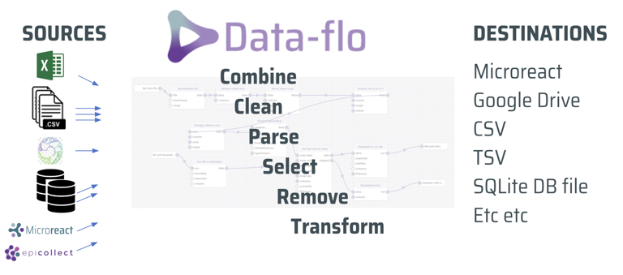
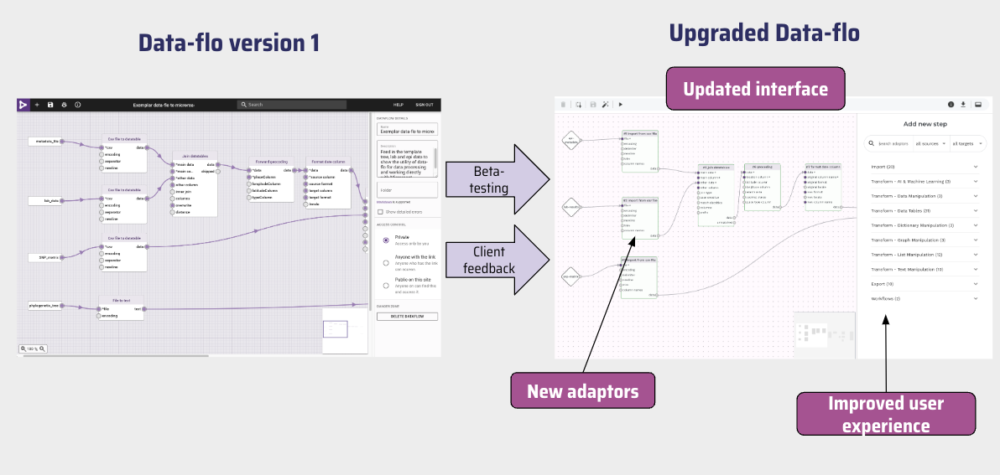

Data-flo (pronounced data-flow) is an open-source web application for data integration. It provides an easy-to-use visual interface to design reusable Workflows (data pipelines) that import, merge, clean, and manipulate data in many different ways. Once a Workflow has been created, it can be run anytime, by anyone with access, to enable push-button data extraction and transformation.
Here is a diagram of a Data-flo workflow indicating the different data sources and output destinations.

Why use Data-flo?
Data-flo saves you time by removing the bulk of the manual repetitive workflows that require multiple, sequential, or tedious steps, enabling you to focus on analysis and interpretation.
With Data-flo, users can:
- Rapidly prepare data for visualization, and reporting
- Easily share processed data between teams
- Consistently reproduce and validate data transformation procedures for updated or new datasets
- Seamlessly integrate data from multiple databases and sources
- Automatically update a Microreact project with fresh data
While Data-flo is used across many sectors (data science, academia, public health institutions etc.), it contains a number of features tailored to manage bioinformatics-related datasets such as Newick files, tree files, etc.
Citation
If you use Data-flo within a publication please cite:
Major Update in April 2024
Data-flo is continuously evolving as we learn from our community and adapt its features to accommodate new use cases.
In April 2024, a new version of Data-flo will be availble for testing on https://next.data-flo.io/, the large-scale upgrade includes significant changes to the user interface, improved ability to process large datasets, additional adaptors, and enhanced sharing permissions. This cookbook is based on the version available at https://next.data-flo.io/.
Comparison of software interface evolution from Data-flo version 1 to the latest version of Data-flo, The image calls out changes to several user interface upgrades, new adaptors, and improved user experience. The diagram highlighting that beta-testing and client feedback have contributed to the updates made.

Pre-release Phase: from 1 April 2024 to 30 June 2024
- New version is made available for testing on https://next.data-flo.io/
- The current version remains unchanged and available on https://data-flo.io/.
- A banner is added to https://data-flo.io/ to invite users to try the new version.
Release Phase: from 1 July 2024 to 31 March 2025
- The new version replaces the current version.
- Workflows on the old version are migrated to the new version. Workflows created on https://next.data-flo.io/ will continue to be available on https://data-flo.io/.
- The old version will be available to user on https://legacy.data-flo.io/ until 31 march 2025.
Sunset Phase: from 1 April 2025 onwards
- The old version (https://legacy.data-flo.io/) will be turned off.
Interested in an on-premise installation?
Any data submitted through Data-flo.io is processed on the Data-flo server according to the Privacy and Terms of Service. If this does not meet agency standards for protected information, Data-flo can be installed on-premise and locally administered. This local (on-premise) installation behind your firewall enables you to process sensitive data safely. With an on-premise installation, all data is retained locally and nothing is sent to the public Data-flo server.
An on-premise Data-flo server allows you to build workflows that connect directly to internal systems, such as Laboratory Information Management Systems (LIMS), disease surveillance systems, files stored in local shared drives, and many other systems. This allows you to create secure and comprehensive data processing and cleaning workflows that can leverage both public and private data sources.
To request a quote for the supported, Docker-packaged instance, please email us at data-flo@cgps.group